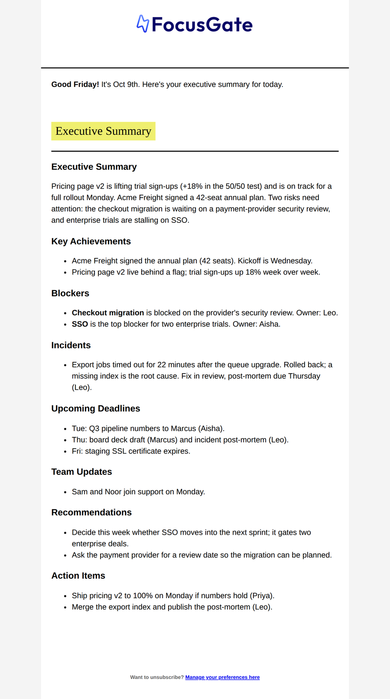
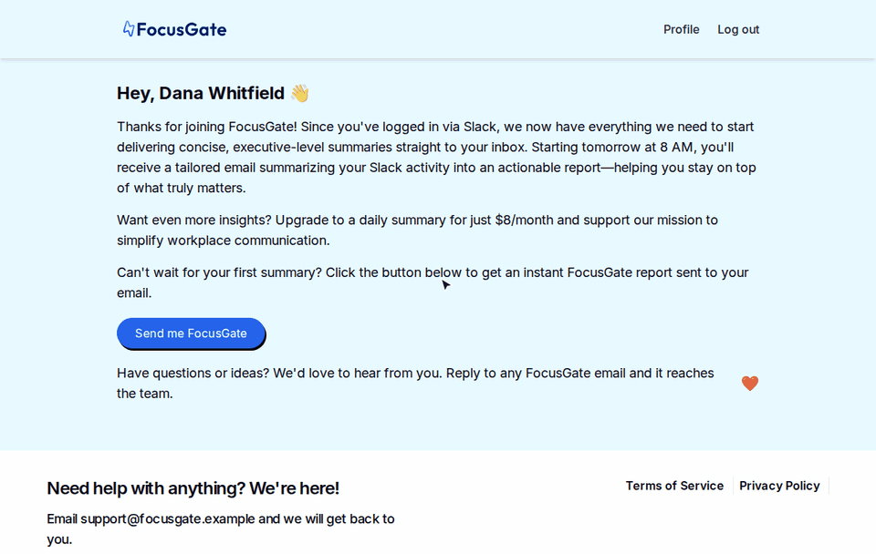
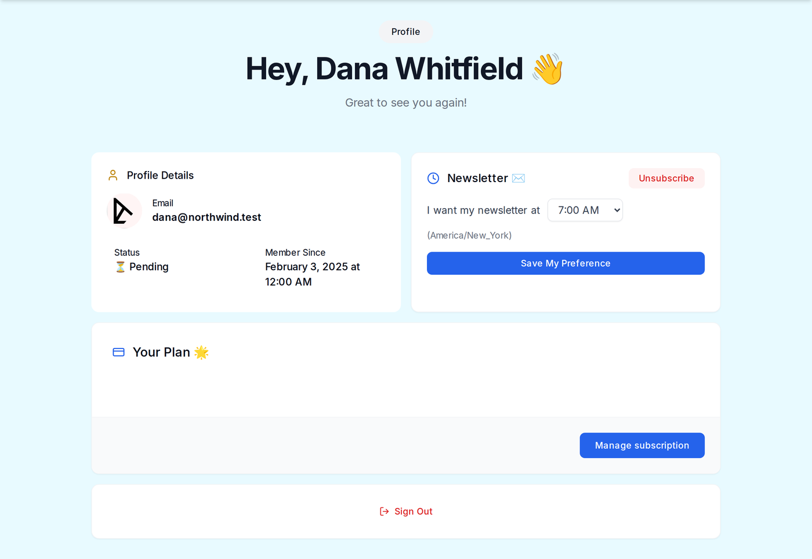
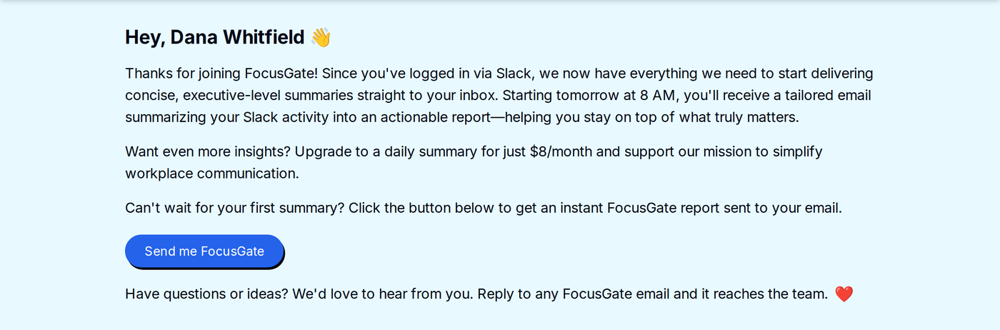
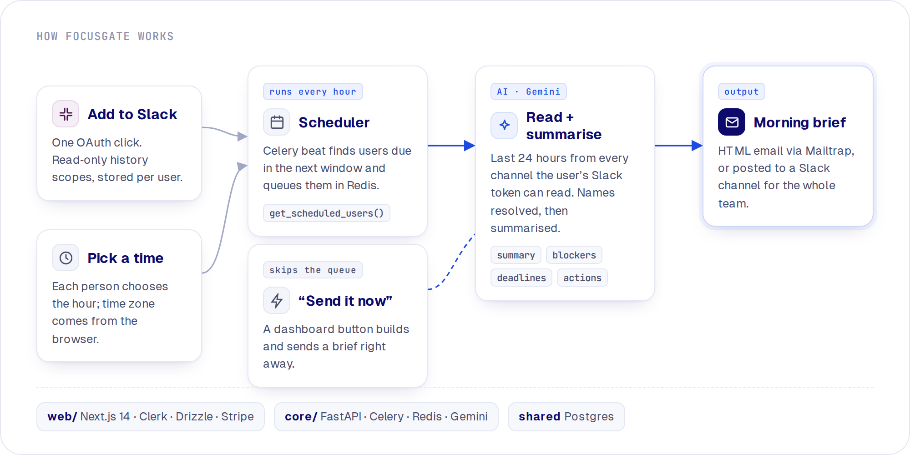

In your inbox by 7 AM.
FocusGate reads the last 24 hours of every Slack channel you can see and emails you one short brief at the time you choose: what happened, what is blocked, what is due and who owns it.

Recorded headless on 127.0.0.1 with a local Postgres. Clerk, Slack and Gemini are stubbed, and every person and company in the demo is fictional.

A FastAPI and Celery service reads Slack and writes the brief. A Next.js app handles sign-in, Add to Slack, the delivery time and billing.
Choose when the brief arrives. The browser's time zone is saved with it, and an hourly job finds everyone who is due next.

Executive summary, achievements, blockers, incidents, deadlines, team updates, recommendations and action items, with owners by name.
New users get a button that builds and sends a brief straight away, so nobody waits until tomorrow to see what it does.

/focusgate command that posts a brief into the current channel on demand.
get_scheduled_users() and queues whoever is due in Redis.You need Node 18+, Python 3.12, Poetry and Docker, plus Clerk, a Slack app, Gemini and Mailtrap. Stripe is optional.
git clone https://github.com/enzihub/focusgate && cd focusgate/web # Postgres + local Neon HTTP proxy (see README for the two env vars) docker compose -f src/db/docker-compose.yml up -d cp .env.example .env.local && npm ci && npm run db:migrate npm run dev # http://localhost:3000 cd ../core # fill in .env.development first poetry install --no-root poetry run uvicorn main:app --port 8000 poetry run celery -A app.core.scheduler.job_tasks worker poetry run celery -A app.core.scheduler.job_tasks beat
Every value in the example env files is blank. The full setup, including the Slack scopes and the scheduler SQL, is in the README.